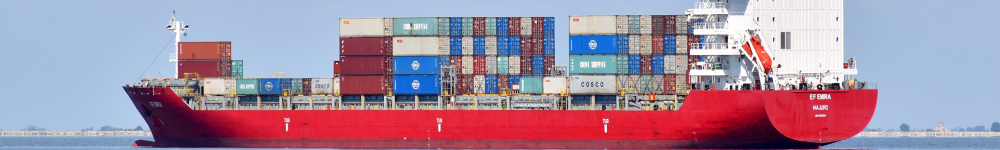

home >
기업소개 >
회사연혁
회사연혁
2010s

- 2016
- 05월소아용 “피라맥스 과립” 한국 식약처로 부터 허가승인
04월제3자 배정(송암사) 유상증자, 지주회사체제 전환
- 2015
- 11월소아용 항말라리아제 “피라맥스 과립” 유럽의약국(EMA)로 부터 허가승인
11월 유착방지제 “메디커튼” 대한민국발명특허 대상 수상
- 2013
- 08월'산업기술'사업화 기술부문 우수상 수상(산업통상자원부)
01월EU-GMP 기준 충북오송 생명과학단지 내 세파계 항생제 전용공장 KGMP 승인
- 2012
- 11월충남대학교 약학대학과 강심제 관련 기술이전 조인식
02월자궁근종치료제 에스미야®정 유럽위원회 (European Commission,EC)가 판매허가
02월제 13회 대한민국 신약 개발상 신약개발부분, "피라맥스정: 신약개발대상 수상
02월청주MBC "충북경제 성공시대" 방영
- 2010
- 03월제 44회 납세자의 날 "모범납세자" 표창(안산세무서)
03월피라맥스정 유럽약정국(EMA) 신약허가(NDA) 신청
2000s
- 2009
- 06월"Mosapride Citrate(숙신산 모사프리드)" 원료합성 대량생산 성공
03월"Amlodipine Besylate(베실산 암로디핀)" 원료합성 대량생산 성공
- 2008
- 10월ICTM(국제열대의학회) 감사패 수상
08월 경기도 안산시 반월공단 내 PYRAMAX(항 말라리아제) 전용공장 준공
- 2005
- 11월제42회 무역의 날, “2000만 불 수출의 탑” 수상 및 “철탑산업훈장” 수훈
9월"Zaltoprofen(잘토프로펜)" 원료합성 대량생산 성공
- 2004
- 07월해외협렵업체대상, SHINPOONG WORLD FRIENDSHIP WORKSHOP
05월신풍제약주식회사 신(新)사옥 준공식(강남구 역삼동 748-31)
04월"Sulbactam Sodium(설박탐 나트륨)" 원료합성 대량생산 성공
02월신풍제약주식회사 신(新)사옥 기공식(강남구 역삼동 748-31)
1990s
- 1999
- 07월WHO와 유니세프 후원, "국제 헬스케어컨퍼런스" 신풍 기생충구제사업 사례 발표
04월항생제 "Cefazedone Sodium(세파제돈 나트륨)" 원료합성 대량생산 성공
- 1998
- 11월항암제 “Doxifluridine(독시플루리딘)” 세계 2번째, 국내최초 원료합성 대량생산 성공
9월 진경제 "Tiropramide HCI(염산 티로프라미드)" 원료합성 대량생산 성공
- 1995
- 09월항생제 "Ceftriaxone Sodium(세프트리악손 나트륨) 원료합성 대량생산 성공
01월제약업계 최초로 중국 현지에 “천진신풍제약유한공사”합작법인설립
- 1992
- 11월제 29회 무역의 날,'1000만불 수출의 탑' 수상
02월"Ceftezole Sodium(세프테졸 나트륨)" 원료합성 대량생산 성공
02월"Praziquantel(프라지콴텔)" 제조방법 특허취득(국내,해외)
02월신풍제약 증권거래소 주식상장
1980s
- 1988
- 11월완제생산 전 제형 KGMP적격업소 지정(보건사회부)
03월아프리카 수단에 합작회사 GMC설립(의약품 현지 생산,판매)
- 1987
- 12월의약품 수출증대와 산업발전업체 표창(보건사회부장관)
6월 중견 수출기업 선정(한국장기신용은행)
- 1984
- 11월제23회 무역의 날, "1백만 불 수출의 탑" 수상
07월"신풍제약주식회사"로 법인체 전환